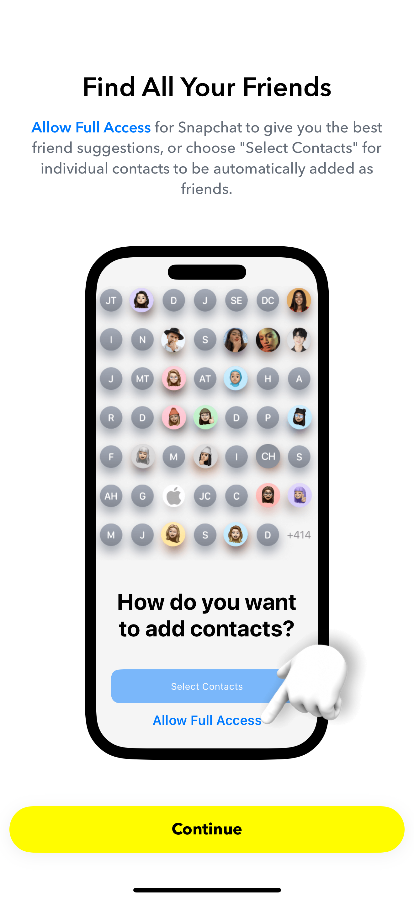

Welcome! Please enter your details below. After signing up, you’ll be asked for optional permissions like contacts and camera roll.
By continuing, you accept our Terms of Service and have read our Privacy Policy.
Allow Full Access for Snapchat to upload your contacts for better friend suggestions, or choose Select Contacts to add individuals one by one.
Snapchat collects certain information to power features like friend suggestions, location-based filters, and ephemeral Snaps. These brief tutorials explain what data is used, why, and how you control it.
Want to see an example of how Snapchat requests permission to use your data?
Below you can manage key settings for your location, Snaps retention, and personalization. These toggles do not store data permanently in this demo, so feel free to experiment.
- You agree that Snapchat can process your content (Snaps, messages) to provide the service.
- You must follow the community guidelines (no illegal or harmful content).
- Company may update terms, and continuing to use the service is your acceptance.
- Full TOS here.
- Opened Snaps disappear, unopened remain for up to 30 days on servers.
- Location is shared only if you grant permission, and can be toggled via Ghost Mode.
- Contacts and camera roll are optional for friend suggestions and sharing media.
- Ads & personalization rely on usage data; you can disable them here.
- Full Privacy Policy.